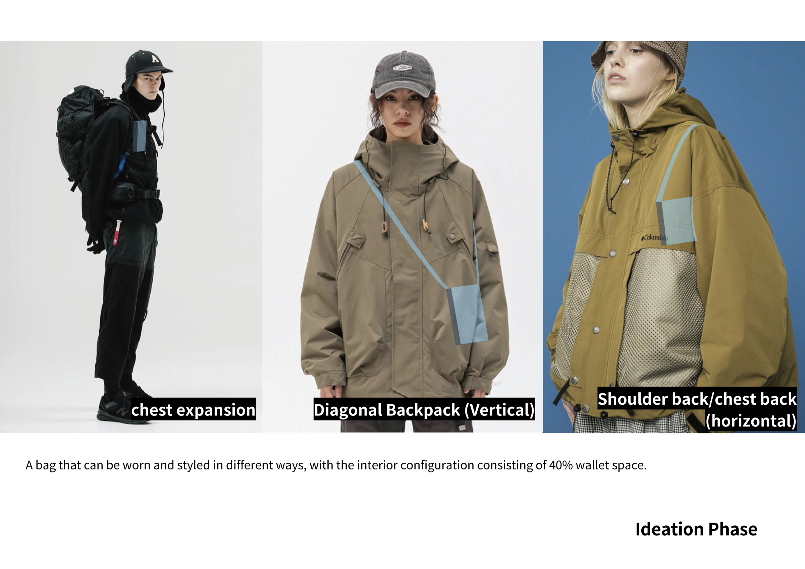
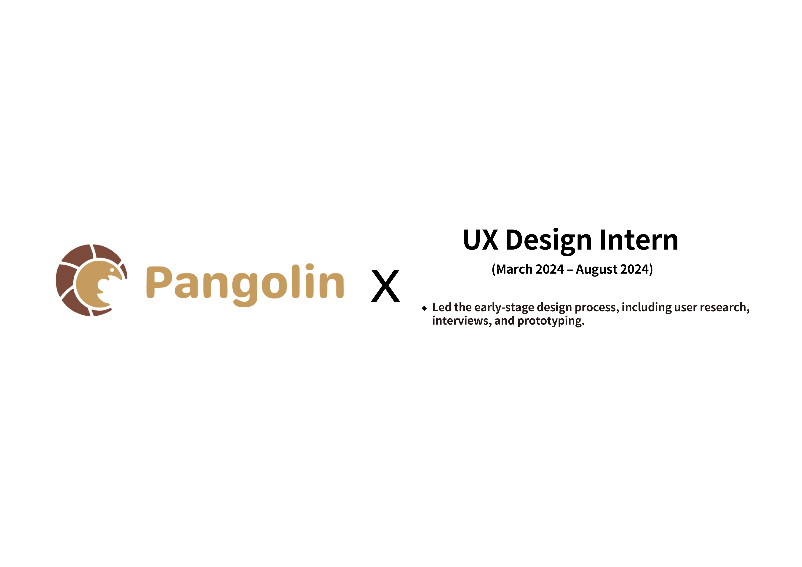
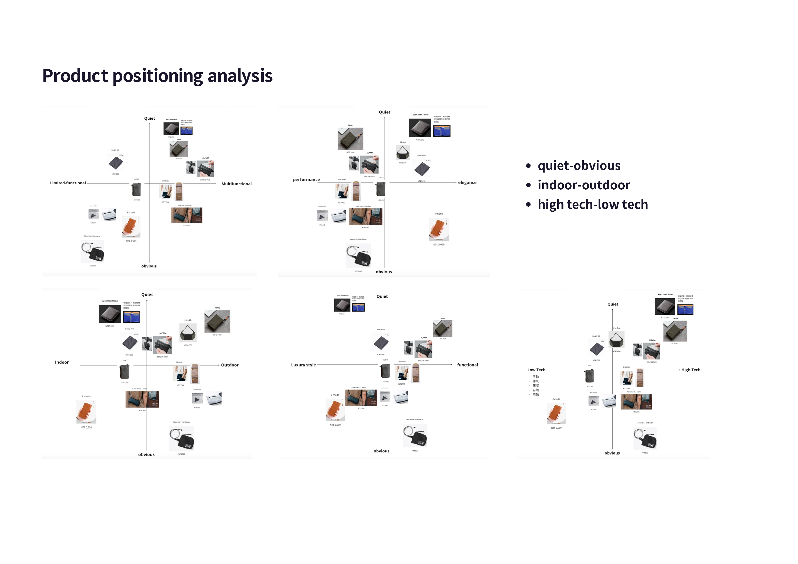
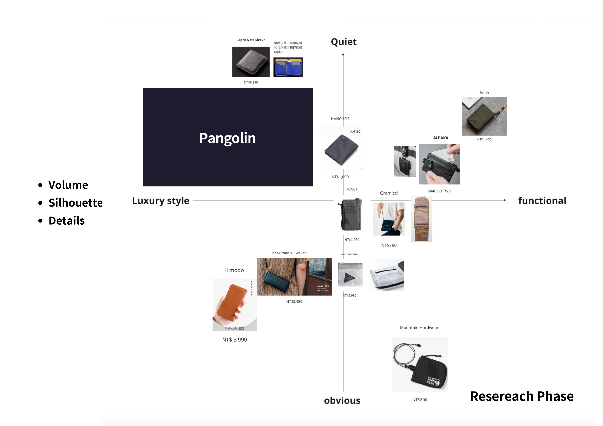
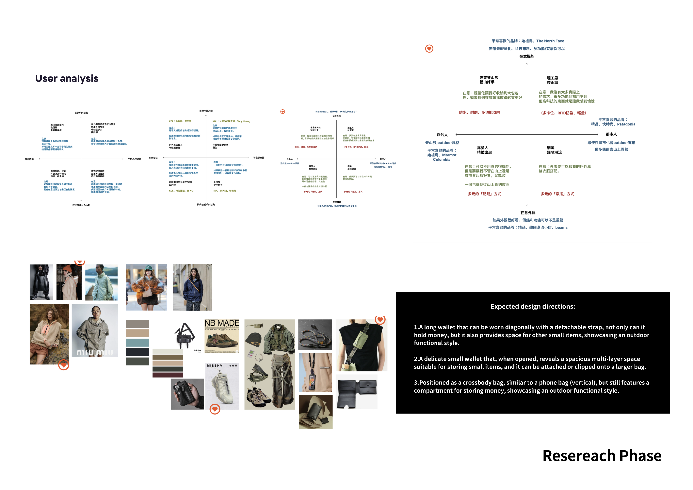
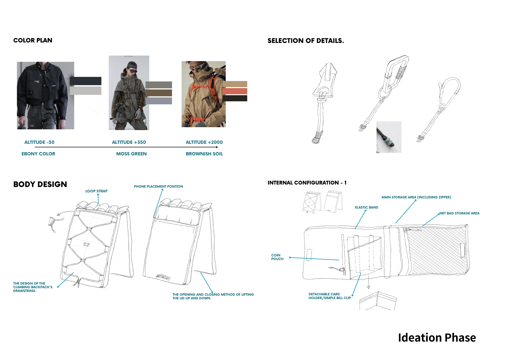
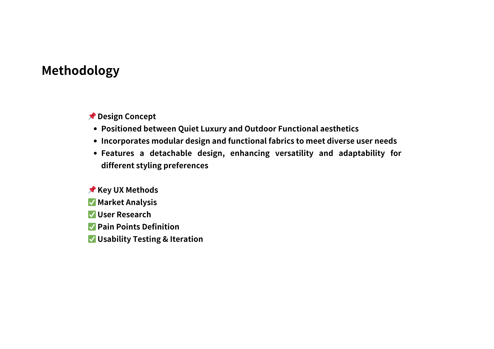

Pangolin
User research and prototyping for a modular outdoor pack that reconfigures to the way you move.
Overview
At Pangolin's Taipei studio, I led the early-stage UX research for a new outdoor pack line: interviews, empathy mapping, and competitive analysis that fed a positioning map of where the product could meaningfully differ. The outcome was a modular pack that's worn as a backpack, a diagonal sling, or a chest expansion — depending on the route.
Hikers want less gear, not smaller bags.
The interviews surfaced a pattern across weekend hikers, urban commuters, and dual-purpose travelers: they didn't want more compartments. They wanted a pack that wasn't the same silhouette at 8am in the city and 2pm on a ridgeline.
We mapped that across a quiet-obvious, indoor-outdoor, and high-tech / low-tech axis — a tool I still use to frame product decisions.


Three ways to wear the same idea.
The prototype pack carries 40% of its volume as re-distributable modules. Clips on the shoulder and chest let the same bag become a vertical diagonal sling, a chest-expansion harness, or a horizontal shoulder / chest pack — with the heavier compartment always close to the body's center of gravity.
We iterated through four physical rounds with weighted dummies, then two usability tests with real hikers on short trails.




A research spine for what came next.
The internship closed with a handoff of the positioning framework, three prototyped configurations, and a usability-tested short list of features. Personally, it was the project that locked UX in as a craft I wanted to build a career around — early research, done honestly, makes every downstream decision cheaper.